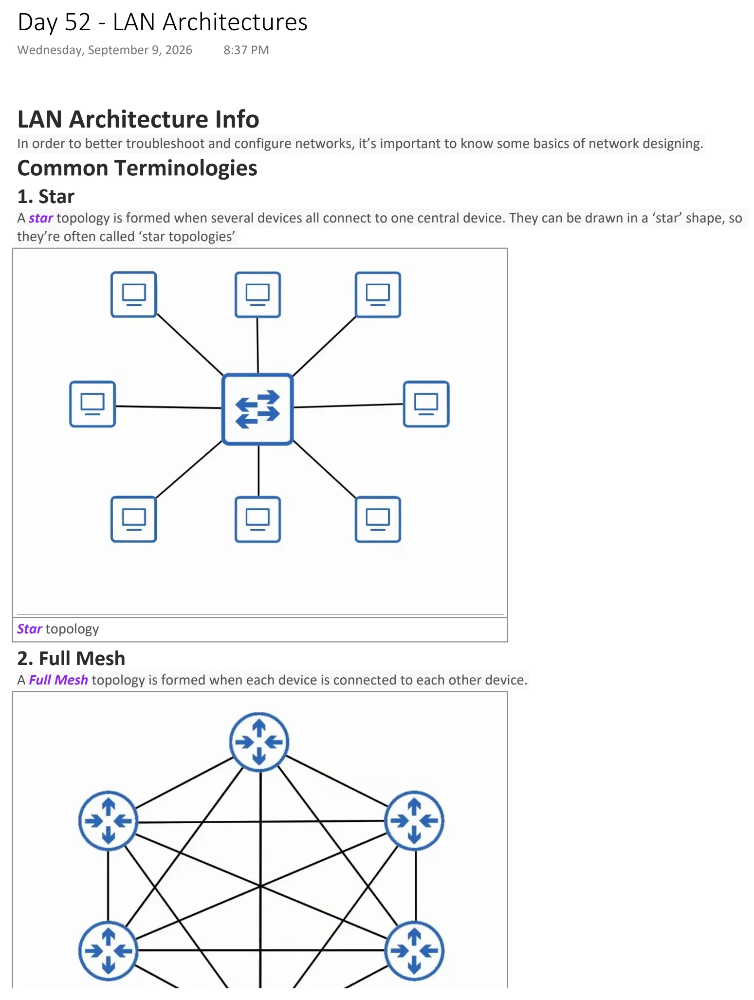
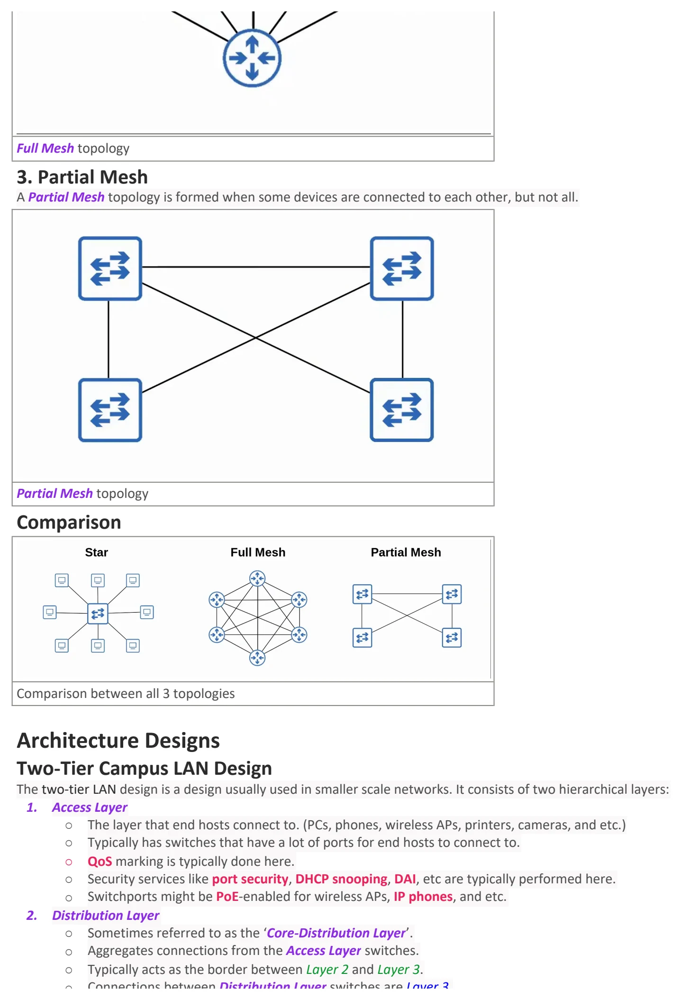
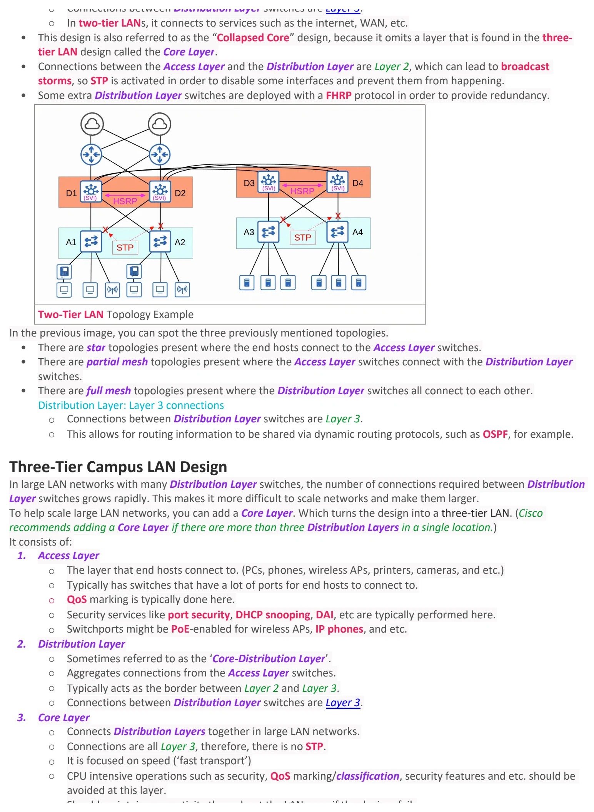
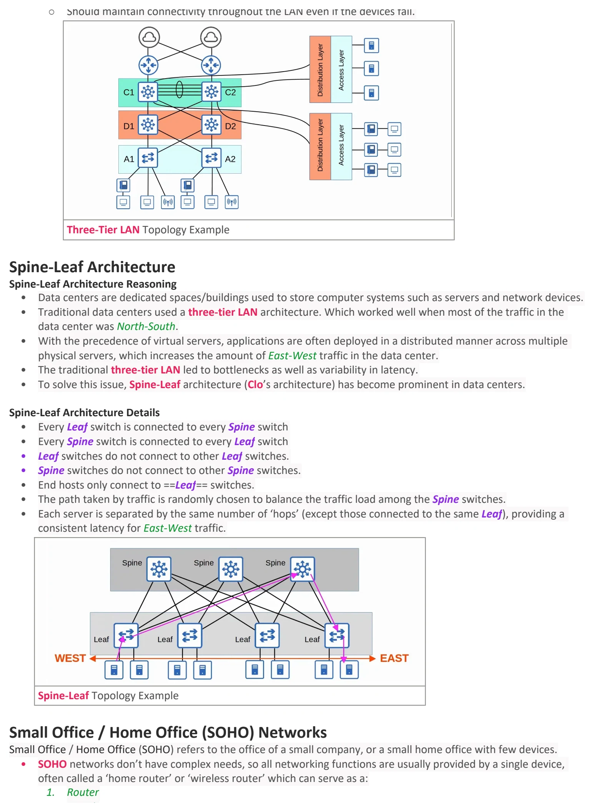
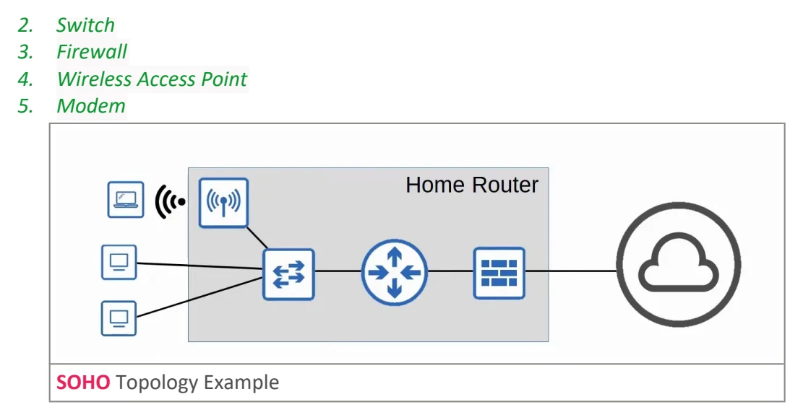

LAN Architectures
Download original PDF




Text view — LAN Architectures
Extracted from the original export. Diagrams and some formatting appear in the notes above.
Day 52 - LAN Architectures Wednesday, September 9, 2026 8:37 PM LAN Architecture Info In order to better troubleshoot and configure networks, it’s important to know some basics of network designing. Common Terminologies 1. Star A star topology is formed when several devices all connect to one central device. They can be drawn in a ‘star’ shape, so they’re often called ‘star topologies’ Star topology 2. Full Mesh A Full Mesh topology is formed when each device is connected to each other device. Full Mesh topology 3. Partial Mesh A Partial Mesh topology is formed when some devices are connected to each other, but not all. Partial Mesh topology Comparison Comparison between all 3 topologies Architecture Designs Two-Tier Campus LAN Design The two-tier LAN design is a design usually used in smaller scale networks. It consists of two hierarchical layers: 1. Access Layer ○ The layer that end hosts connect to. (PCs, phones, wireless APs, printers, cameras, and etc.) ○ Typically has switches that have a lot of ports for end hosts to connect to. ○ QoS marking is typically done here. ○ Security services like port security, DHCP snooping, DAI, etc are typically performed here. ○ Switchports might be PoE-enabled for wireless APs, IP phones, and etc. 2. Distribution Layer ○ Sometimes referred to as the ‘Core-Distribution Layer’. ○ Aggregates connections from the Access Layer switches. ○ Typically acts as the border between Layer 2 and Layer 3. ○ Connections between Distribution Layer switches are Layer 3. ○ In two-tier LANs, it connects to services such as the internet, WAN, etc. • This design is also referred to as the “Collapsed Core” design, because it omits a layer that is found in the three- tier LAN design called the Core Layer. • Connections between the Access Layer and the Distribution Layer are Layer 2, which can lead to broadcast storms, so STP is activated in order to disable some interfaces and prevent them from happening. • Some extra Distribution Layer switches are deployed with a FHRP protocol in order to provide redundancy. Two-Tier LAN Topology Example In the previous image, you can spot the three previously mentioned topologies. • There are star topologies present where the end hosts connect to the Access Layer switches. • There are partial mesh topologies present where the Access Layer switches connect with the Distribution Layer switches. • There are full mesh topologies present where the Distribution Layer switches all connect to each other. Distribution Layer: Layer 3 connections ○ Connections between Distribution Layer switches are Layer 3. ○ This allows for routing information to be shared via dynamic routing protocols, such as OSPF, for example. Three-Tier Campus LAN Design In large LAN networks with many Distribution Layer switches, the number of connections required between Distribution Layer switches grows rapidly. This makes it more difficult to scale networks and make them larger. To help scale large LAN networks, you can add a Core Layer. Which turns the design into a three-tier LAN. (Cisco recommends adding a Core Layer if there are more than three Distribution Layers in a single location.) It consists of: 1. Access Layer ○ The layer that end hosts connect to. (PCs, phones, wireless APs, printers, cameras, and etc.) ○ Typically has switches that have a lot of ports for end hosts to connect to. ○ QoS marking is typically done here. ○ Security services like port security, DHCP snooping, DAI, etc are typically performed here. ○ Switchports might be PoE-enabled for wireless APs, IP phones, and etc. 2. Distribution Layer ○ Sometimes referred to as the ‘Core-Distribution Layer’. ○ Aggregates connections from the Access Layer switches. ○ Typically acts as the border between Layer 2 and Layer 3. ○ Connections between Distribution Layer switches are Layer 3. 3. Core Layer ○ Connects Distribution Layers together in large LAN networks. ○ Connections are all Layer 3, therefore, there is no STP. ○ It is focused on speed (‘fast transport’) ○ CPU intensive operations such as security, QoS marking/classification, security features and etc. should be avoided at this layer. ○ Should maintain connectivity throughout the LAN even if the devices fail. Three-Tier LAN Topology Example Spine-Leaf Architecture Spine-Leaf Architecture Reasoning • Data centers are dedicated spaces/buildings used to store computer systems such as servers and network devices. • Traditional data centers used a three-tier LAN architecture. Which worked well when most of the traffic in the data center was North-South. • With the precedence of virtual servers, applications are often deployed in a distributed manner across multiple physical servers, which increases the amount of East-West traffic in the data center. • The traditional three-tier LAN led to bottlenecks as well as variability in latency. • To solve this issue, Spine-Leaf architecture (Clo’s architecture) has become prominent in data centers. Spine-Leaf Architecture Details • Every Leaf switch is connected to every Spine switch • Every Spine switch is connected to every Leaf switch • Leaf switches do not connect to other Leaf switches. • Spine switches do not connect to other Spine switches. • End hosts only connect to ==Leaf== switches. • The path taken by traffic is randomly chosen to balance the traffic load among the Spine switches. • Each server is separated by the same number of ‘hops’ (except those connected to the same Leaf), providing a consistent latency for East-West traffic. Spine-Leaf Topology Example Small Office / Home Office (SOHO) Networks Small Office / Home Office (SOHO) refers to the office of a small company, or a small home office with few devices. • SOHO networks don’t have complex needs, so all networking functions are usually provided by a single device, often called a ‘home router’ or ‘wireless router’ which can serve as a: 1. Router 2. Switch 3. Firewall 4. Wireless Access Point 5. Modem SOHO Topology Example Day 52 - LAN Architectures Wednesday, September 9, 2026 8:37 PM LAN Architecture Info In order to better troubleshoot and configure networks, it’s important to know some basics of network designing. Common Terminologies 1. Star A star topology is formed when several devices all connect to one central device. They can be drawn in a ‘star’ shape, so they’re often called ‘star topologies’ Star topology 2. Full Mesh A Full Mesh topology is formed when each device is connected to each other device. Full Mesh topology 3. Partial Mesh A Partial Mesh topology is formed when some devices are connected to each other, but not all. Partial Mesh topology Comparison Comparison between all 3 topologies Architecture Designs Two-Tier Campus LAN Design The two-tier LAN design is a design usually used in smaller scale networks. It consists of two hierarchical layers: 1. Access Layer ○ The layer that end hosts connect to. (PCs, phones, wireless APs, printers, cameras, and etc.) ○ Typically has switches that have a lot of ports for end hosts to connect to. ○ QoS marking is typically done here. ○ Security services like port security, DHCP snooping, DAI, etc are typically performed here. ○ Switchports might be PoE-enabled for wireless APs, IP phones, and etc. 2. Distribution Layer ○ Sometimes referred to as the ‘Core-Distribution Layer’. ○ Aggregates connections from the Access Layer switches. ○ Typically acts as the border between Layer 2 and Layer 3. ○ Connections between Distribution Layer switches are Layer 3. ○ In two-tier LANs, it connects to services such as the internet, WAN, etc. • This design is also referred to as the “Collapsed Core” design, because it omits a layer that is found in the three- tier LAN design called the Core Layer. • Connections between the Access Layer and the Distribution Layer are Layer 2, which can lead to broadcast storms, so STP is activated in order to disable some interfaces and prevent them from happening. • Some extra Distribution Layer switches are deployed with a FHRP protocol in order to provide redundancy. Two-Tier LAN Topology Example In the previous image, you can spot the three previously mentioned topologies. • There are star topologies present where the end hosts connect to the Access Layer switches. • There are partial mesh topologies present where the Access Layer switches connect with the Distribution Layer switches. • There are full mesh topologies present where the Distribution Layer switches all connect to each other. Distribution Layer: Layer 3 connections ○ Connections between Distribution Layer switches are Layer 3. ○ This allows for routing information to be shared via dynamic routing protocols, such as OSPF, for example. Three-Tier Campus LAN Design In large LAN networks with many Distribution Layer switches, the number of connections required between Distribution Layer switches grows rapidly. This makes it more difficult to scale networks and make them larger. To help scale large LAN networks, you can add a Core Layer. Which turns the design into a three-tier LAN. (Cisco recommends adding a Core Layer if there are more than three Distribution Layers in a single location.) It consists of: 1. Access Layer ○ The layer that end hosts connect to. (PCs, phones, wireless APs, printers, cameras, and etc.) ○ Typically has switches that have a lot of ports for end hosts to connect to. ○ QoS marking is typically done here. ○ Security services like port security, DHCP snooping, DAI, etc are typically performed here. ○ Switchports might be PoE-enabled for wireless APs, IP phones, and etc. 2. Distribution Layer ○ Sometimes referred to as the ‘Core-Distribution Layer’. ○ Aggregates connections from the Access Layer switches. ○ Typically acts as the border between Layer 2 and Layer 3. ○ Connections between Distribution Layer switches are Layer 3. 3. Core Layer ○ Connects Distribution Layers together in large LAN networks. ○ Connections are all Layer 3, therefore, there is no STP. ○ It is focused on speed (‘fast transport’) ○ CPU intensive operations such as security, QoS marking/classification, security features and etc. should be avoided at this layer. ○ Should maintain connectivity throughout the LAN even if the devices fail. Three-Tier LAN Topology Example Spine-Leaf Architecture Spine-Leaf Architecture Reasoning • Data centers are dedicated spaces/buildings used to store computer systems such as servers and network devices. • Traditional data centers used a three-tier LAN architecture. Which worked well when most of the traffic in the data center was North-South. • With the precedence of virtual servers, applications are often deployed in a distributed manner across multiple physical servers, which increases the amount of East-West traffic in the data center. • The traditional three-tier LAN led to bottlenecks as well as variability in latency. • To solve this issue, Spine-Leaf architecture (Clo’s architecture) has become prominent in data centers. Spine-Leaf Architecture Details • Every Leaf switch is connected to every Spine switch • Every Spine switch is connected to every Leaf switch • Leaf switches do not connect to other Leaf switches. • Spine switches do not connect to other Spine switches. • End hosts only connect to ==Leaf== switches. • The path taken by traffic is randomly chosen to balance the traffic load among the Spine switches. • Each server is separated by the same number of ‘hops’ (except those connected to the same Leaf), providing a consistent latency for East-West traffic. Spine-Leaf Topology Example Small Office / Home Office (SOHO) Networks Small Office / Home Office (SOHO) refers to the office of a small company, or a small home office with few devices. • SOHO networks don’t have complex needs, so all networking functions are usually provided by a single device, often called a ‘home router’ or ‘wireless router’ which can serve as a: 1. Router 2. Switch 3. Firewall 4. Wireless Access Point 5. Modem SOHO Topology Example Day 52 - LAN Architectures Wednesday, September 9, 2026 8:37 PM LAN Architecture Info In order to better troubleshoot and configure networks, it’s important to know some basics of network designing. Common Terminologies 1. Star A star topology is formed when several devices all connect to one central device. They can be drawn in a ‘star’ shape, so they’re often called ‘star topologies’ Star topology 2. Full Mesh A Full Mesh topology is formed when each device is connected to each other device. Full Mesh topology 3. Partial Mesh A Partial Mesh topology is formed when some devices are connected to each other, but not all. Partial Mesh topology Comparison Comparison between all 3 topologies Architecture Designs Two-Tier Campus LAN Design The two-tier LAN design is a design usually used in smaller scale networks. It consists of two hierarchical layers: 1. Access Layer ○ The layer that end hosts connect to. (PCs, phones, wireless APs, printers, cameras, and etc.) ○ Typically has switches that have a lot of ports for end hosts to connect to. ○ QoS marking is typically done here. ○ Security services like port security, DHCP snooping, DAI, etc are typically performed here. ○ Switchports might be PoE-enabled for wireless APs, IP phones, and etc. 2. Distribution Layer ○ Sometimes referred to as the ‘Core-Distribution Layer’. ○ Aggregates connections from the Access Layer switches. ○ Typically acts as the border between Layer 2 and Layer 3. ○ Connections between Distribution Layer switches are Layer 3. ○ In two-tier LANs, it connects to services such as the internet, WAN, etc. • This design is also referred to as the “Collapsed Core” design, because it omits a layer that is found in the three- tier LAN design called the Core Layer. • Connections between the Access Layer and the Distribution Layer are Layer 2, which can lead to broadcast storms, so STP is activated in order to disable some interfaces and prevent them from happening. • Some extra Distribution Layer switches are deployed with a FHRP protocol in order to provide redundancy. Two-Tier LAN Topology Example In the previous image, you can spot the three previously mentioned topologies. • There are star topologies present where the end hosts connect to the Access Layer switches. • There are partial mesh topologies present where the Access Layer switches connect with the Distribution Layer switches. • There are full mesh topologies present where the Distribution Layer switches all connect to each other. Distribution Layer: Layer 3 connections ○ Connections between Distribution Layer switches are Layer 3. ○ This allows for routing information to be shared via dynamic routing protocols, such as OSPF, for example. Three-Tier Campus LAN Design In large LAN networks with many Distribution Layer switches, the number of connections required between Distribution Layer switches grows rapidly. This makes it more difficult to scale networks and make them larger. To help scale large LAN networks, you can add a Core Layer. Which turns the design into a three-tier LAN. (Cisco recommends adding a Core Layer if there are more than three Distribution Layers in a single location.) It consists of: 1. Access Layer ○ The layer that end hosts connect to. (PCs, phones, wireless APs, printers, cameras, and etc.) ○ Typically has switches that have a lot of ports for end hosts to connect to. ○ QoS marking is typically done here. ○ Security services like port security, DHCP snooping, DAI, etc are typically performed here. ○ Switchports might be PoE-enabled for wireless APs, IP phones, and etc. 2. Distribution Layer ○ Sometimes referred to as the ‘Core-Distribution Layer’. ○ Aggregates connections from the Access Layer switches. ○ Typically acts as the border between Layer 2 and Layer 3. ○ Connections between Distribution Layer switches are Layer 3. 3. Core Layer ○ Connects Distribution Layers together in large LAN networks. ○ Connections are all Layer 3, therefore, there is no STP. ○ It is focused on speed (‘fast transport’) ○ CPU intensive operations such as security, QoS marking/classification, security features and etc. should be avoided at this layer. ○ Should maintain connectivity throughout the LAN even if the devices fail. Three-Tier LAN Topology Example Spine-Leaf Architecture Spine-Leaf Architecture Reasoning • Data centers are dedicated spaces/buildings used to store computer systems such as servers and network devices. • Traditional data centers used a three-tier LAN architecture. Which worked well when most of the traffic in the data center was North-South. • With the precedence of virtual servers, applications are often deployed in a distributed manner across multiple physical servers, which increases the amount of East-West traffic in the data center. • The traditional three-tier LAN led to bottlenecks as well as variability in latency. • To solve this issue, Spine-Leaf architecture (Clo’s architecture) has become prominent in data centers. Spine-Leaf Architecture Details • Every Leaf switch is connected to every Spine switch • Every Spine switch is connected to every Leaf switch • Leaf switches do not connect to other Leaf switches. • Spine switches do not connect to other Spine switches. • End hosts only connect to ==Leaf== switches. • The path taken by traffic is randomly chosen to balance the traffic load among the Spine switches. • Each server is separated by the same number of ‘hops’ (except those connected to the same Leaf), providing a consistent latency for East-West traffic. Spine-Leaf Topology Example Small Office / Home Office (SOHO) Networks Small Office / Home Office (SOHO) refers to the office of a small company, or a small home office with few devices. • SOHO networks don’t have complex needs, so all networking functions are usually provided by a single device, often called a ‘home router’ or ‘wireless router’ which can serve as a: 1. Router 2. Switch 3. Firewall 4. Wireless Access Point 5. Modem SOHO Topology Example Day 52 - LAN Architectures Wednesday, September 9, 2026 8:37 PM LAN Architecture Info In order to better troubleshoot and configure networks, it’s important to know some basics of network designing. Common Terminologies 1. Star A star topology is formed when several devices all connect to one central device. They can be drawn in a ‘star’ shape, so they’re often called ‘star topologies’ Star topology 2. Full Mesh A Full Mesh topology is formed when each device is connected to each other device. Full Mesh topology 3. Partial Mesh A Partial Mesh topology is formed when some devices are connected to each other, but not all. Partial Mesh topology Comparison Comparison between all 3 topologies Architecture Designs Two-Tier Campus LAN Design The two-tier LAN design is a design usually used in smaller scale networks. It consists of two hierarchical layers: 1. Access Layer ○ The layer that end hosts connect to. (PCs, phones, wireless APs, printers, cameras, and etc.) ○ Typically has switches that have a lot of ports for end hosts to connect to. ○ QoS marking is typically done here. ○ Security services like port security, DHCP snooping, DAI, etc are typically performed here. ○ Switchports might be PoE-enabled for wireless APs, IP phones, and etc. 2. Distribution Layer ○ Sometimes referred to as the ‘Core-Distribution Layer’. ○ Aggregates connections from the Access Layer switches. ○ Typically acts as the border between Layer 2 and Layer 3. ○ Connections between Distribution Layer switches are Layer 3. ○ In two-tier LANs, it connects to services such as the internet, WAN, etc. • This design is also referred to as the “Collapsed Core” design, because it omits a layer that is found in the three- tier LAN design called the Core Layer. • Connections between the Access Layer and the Distribution Layer are Layer 2, which can lead to broadcast storms, so STP is activated in order to disable some interfaces and prevent them from happening. • Some extra Distribution Layer switches are deployed with a FHRP protocol in order to provide redundancy. Two-Tier LAN Topology Example In the previous image, you can spot the three previously mentioned topologies. • There are star topologies present where the end hosts connect to the Access Layer switches. • There are partial mesh topologies present where the Access Layer switches connect with the Distribution Layer switches. • There are full mesh topologies present where the Distribution Layer switches all connect to each other. Distribution Layer: Layer 3 connections ○ Connections between Distribution Layer switches are Layer 3. ○ This allows for routing information to be shared via dynamic routing protocols, such as OSPF, for example. Three-Tier Campus LAN Design In large LAN networks with many Distribution Layer switches, the number of connections required between Distribution Layer switches grows rapidly. This makes it more difficult to scale networks and make them larger. To help scale large LAN networks, you can add a Core Layer. Which turns the design into a three-tier LAN. (Cisco recommends adding a Core Layer if there are more than three Distribution Layers in a single location.) It consists of: 1. Access Layer ○ The layer that end hosts connect to. (PCs, phones, wireless APs, printers, cameras, and etc.) ○ Typically has switches that have a lot of ports for end hosts to connect to. ○ QoS marking is typically done here. ○ Security services like port security, DHCP snooping, DAI, etc are typically performed here. ○ Switchports might be PoE-enabled for wireless APs, IP phones, and etc. 2. Distribution Layer ○ Sometimes referred to as the ‘Core-Distribution Layer’. ○ Aggregates connections from the Access Layer switches. ○ Typically acts as the border between Layer 2 and Layer 3. ○ Connections between Distribution Layer switches are Layer 3. 3. Core Layer ○ Connects Distribution Layers together in large LAN networks. ○ Connections are all Layer 3, therefore, there is no STP. ○ It is focused on speed (‘fast transport’) ○ CPU intensive operations such as security, QoS marking/classification, security features and etc. should be avoided at this layer. ○ Should maintain connectivity throughout the LAN even if the devices fail. Three-Tier LAN Topology Example Spine-Leaf Architecture Spine-Leaf Architecture Reasoning • Data centers are dedicated spaces/buildings used to store computer systems such as servers and network devices. • Traditional data centers used a three-tier LAN architecture. Which worked well when most of the traffic in the data center was North-South. • With the precedence of virtual servers, applications are often deployed in a distributed manner across multiple physical servers, which increases the amount of East-West traffic in the data center. • The traditional three-tier LAN led to bottlenecks as well as variability in latency. • To solve this issue, Spine-Leaf architecture (Clo’s architecture) has become prominent in data centers. Spine-Leaf Architecture Details • Every Leaf switch is connected to every Spine switch • Every Spine switch is connected to every Leaf switch • Leaf switches do not connect to other Leaf switches. • Spine switches do not connect to other Spine switches. • End hosts only connect to ==Leaf== switches. • The path taken by traffic is randomly chosen to balance the traffic load among the Spine switches. • Each server is separated by the same number of ‘hops’ (except those connected to the same Leaf), providing a consistent latency for East-West traffic. Spine-Leaf Topology Example Small Office / Home Office (SOHO) Networks Small Office / Home Office (SOHO) refers to the office of a small company, or a small home office with few devices. • SOHO networks don’t have complex needs, so all networking functions are usually provided by a single device, often called a ‘home router’ or ‘wireless router’ which can serve as a: 1. Router 2. Switch 3. Firewall 4. Wireless Access Point 5. Modem SOHO Topology Example Day 52 - LAN Architectures Wednesday, September 9, 2026 8:37 PM LAN Architecture Info In order to better troubleshoot and configure networks, it’s important to know some basics of network designing. Common Terminologies 1. Star A star topology is formed when several devices all connect to one central device. They can be drawn in a ‘star’ shape, so they’re often called ‘star topologies’ Star topology 2. Full Mesh A Full Mesh topology is formed when each device is connected to each other device. Full Mesh topology 3. Partial Mesh A Partial Mesh topology is formed when some devices are connected to each other, but not all. Partial Mesh topology Comparison Comparison between all 3 topologies Architecture Designs Two-Tier Campus LAN Design The two-tier LAN design is a design usually used in smaller scale networks. It consists of two hierarchical layers: 1. Access Layer ○ The layer that end hosts connect to. (PCs, phones, wireless APs, printers, cameras, and etc.) ○ Typically has switches that have a lot of ports for end hosts to connect to. ○ QoS marking is typically done here. ○ Security services like port security, DHCP snooping, DAI, etc are typically performed here. ○ Switchports might be PoE-enabled for wireless APs, IP phones, and etc. 2. Distribution Layer ○ Sometimes referred to as the ‘Core-Distribution Layer’. ○ Aggregates connections from the Access Layer switches. ○ Typically acts as the border between Layer 2 and Layer 3. ○ Connections between Distribution Layer switches are Layer 3. ○ In two-tier LANs, it connects to services such as the internet, WAN, etc. • This design is also referred to as the “Collapsed Core” design, because it omits a layer that is found in the three- tier LAN design called the Core Layer. • Connections between the Access Layer and the Distribution Layer are Layer 2, which can lead to broadcast storms, so STP is activated in order to disable some interfaces and prevent them from happening. • Some extra Distribution Layer switches are deployed with a FHRP protocol in order to provide redundancy. Two-Tier LAN Topology Example In the previous image, you can spot the three previously mentioned topologies. • There are star topologies present where the end hosts connect to the Access Layer switches. • There are partial mesh topologies present where the Access Layer switches connect with the Distribution Layer switches. • There are full mesh topologies present where the Distribution Layer switches all connect to each other. Distribution Layer: Layer 3 connections ○ Connections between Distribution Layer switches are Layer 3. ○ This allows for routing information to be shared via dynamic routing protocols, such as OSPF, for example. Three-Tier Campus LAN Design In large LAN networks with many Distribution Layer switches, the number of connections required between Distribution Layer switches grows rapidly. This makes it more difficult to scale networks and make them larger. To help scale large LAN networks, you can add a Core Layer. Which turns the design into a three-tier LAN. (Cisco recommends adding a Core Layer if there are more than three Distribution Layers in a single location.) It consists of: 1. Access Layer ○ The layer that end hosts connect to. (PCs, phones, wireless APs, printers, cameras, and etc.) ○ Typically has switches that have a lot of ports for end hosts to connect to. ○ QoS marking is typically done here. ○ Security services like port security, DHCP snooping, DAI, etc are typically performed here. ○ Switchports might be PoE-enabled for wireless APs, IP phones, and etc. 2. Distribution Layer ○ Sometimes referred to as the ‘Core-Distribution Layer’. ○ Aggregates connections from the Access Layer switches. ○ Typically acts as the border between Layer 2 and Layer 3. ○ Connections between Distribution Layer switches are Layer 3. 3. Core Layer ○ Connects Distribution Layers together in large LAN networks. ○ Connections are all Layer 3, therefore, there is no STP. ○ It is focused on speed (‘fast transport’) ○ CPU intensive operations such as security, QoS marking/classification, security features and etc. should be avoided at this layer. ○ Should maintain connectivity throughout the LAN even if the devices fail. Three-Tier LAN Topology Example Spine-Leaf Architecture Spine-Leaf Architecture Reasoning • Data centers are dedicated spaces/buildings used to store computer systems such as servers and network devices. • Traditional data centers used a three-tier LAN architecture. Which worked well when most of the traffic in the data center was North-South. • With the precedence of virtual servers, applications are often deployed in a distributed manner across multiple physical servers, which increases the amount of East-West traffic in the data center. • The traditional three-tier LAN led to bottlenecks as well as variability in latency. • To solve this issue, Spine-Leaf architecture (Clo’s architecture) has become prominent in data centers. Spine-Leaf Architecture Details • Every Leaf switch is connected to every Spine switch • Every Spine switch is connected to every Leaf switch • Leaf switches do not connect to other Leaf switches. • Spine switches do not connect to other Spine switches. • End hosts only connect to ==Leaf== switches. • The path taken by traffic is randomly chosen to balance the traffic load among the Spine switches. • Each server is separated by the same number of ‘hops’ (except those connected to the same Leaf), providing a consistent latency for East-West traffic. Spine-Leaf Topology Example Small Office / Home Office (SOHO) Networks Small Office / Home Office (SOHO) refers to the office of a small company, or a small home office with few devices. • SOHO networks don’t have complex needs, so all networking functions are usually provided by a single device, often called a ‘home router’ or ‘wireless router’ which can serve as a: 1. Router 2. Switch 3. Firewall 4. Wireless Access Point 5. Modem SOHO Topology Example